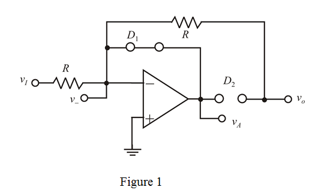
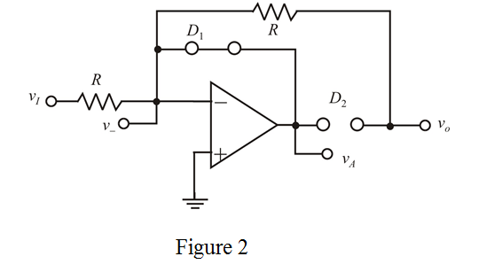
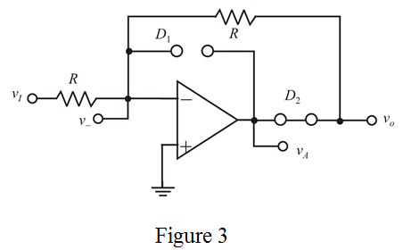

Step 1:
(a)
Refer to Figure P4.84 in the text book.
The input voltage is,
The non-inverting terminal is connected to ground. So, by the virtual ground concept, the voltage at the inverting terminal is also zero.

Therefore, the voltage at  terminal is
terminal is  .
.
Step 2:
When the input voltage is positive, the diode  is forward biased and the diode
is forward biased and the diode  is reverse biased.
is reverse biased.
Draw the following equivalent circuit diagram.

Step 3:
From Figure 1, it is clear that the output voltage of the circuit is zero, because the diode  is cut-off. The output voltage is same as the input voltage.
is cut-off. The output voltage is same as the input voltage.
Apply Kirchhoff’s current law at the inverting terminal.
Therefore, the output voltage is .
The voltage  is voltage across conducting diode
is voltage across conducting diode .
.
Therefore, the value of voltage  is
is .
.
Step 4:
(b)
Refer to Figure P4.84 in the text book.
The input voltage is,
The non-inverting terminal is connected to ground. So, by the virtual ground concept, the voltage at the inverting terminal is also zero.
Therefore, the voltage is.
Step 5:
When the input voltage is positive, the diode  is forward biased and the diode
is forward biased and the diode  is reverse biased.
is reverse biased.
Draw the following equivalent circuit diagram.

Step 6:
From Figure 2, it is clear that the output voltage of the circuit is zero, because the diode  is cut-off. The output voltage is same as the input voltage.
is cut-off. The output voltage is same as the input voltage.
Apply Kirchhoff’s current law at the inverting terminal.
Therefore, the output voltage is .
Step 7:
The voltage

is voltage across the conducting diode,

.
Therefore, the voltage is .
Step 8:
(c)
Refer to Figure P4.84 in the text book.
The input voltage is,
The non-inverting terminal connected to ground. So, by the virtual ground concept, the voltage at the inverting terminal is also zero.

Therefore, the voltage  is
is  .
.
Step 9:
When the input voltage is negative, the diode  is reverse biased and the diode
is reverse biased and the diode  is forward biased.
is forward biased.
Draw the following equivalent circuit diagram.

Step 10:
Apply Kirchhoff’s current law to the inverting terminal.
Therefore, the output voltage is .
The voltage  is the sum of the output voltage and the voltage drop across diode
is the sum of the output voltage and the voltage drop across diode  .
.
Therefore, the voltage  is .
is .
Step 11:
(d)
Refer to Figure P4.84 in the text book.
The input voltage is,
The non-inverting terminal is connected to ground so, by the virtual ground concept, the voltage at the inverting terminal is also zero.

Therefore, the voltage is.
Step 12:
When the input voltage is negative, the diode  is reverse biased and the diode
is reverse biased and the diode  is forward biased.
is forward biased.
Draw the following equivalent circuit diagram.
Step 13:
Apply Kirchhoff’s current law at inverting terminal.
Therefore, the output voltage is .
The voltage is sum of the output voltage and the voltage drop across the diode,  .
.
Therefore, the voltage  is .
is .